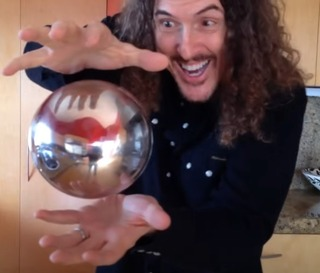

You made it
This page exists for the purpose of showcasing the HTML skills I'm learning on Coursera. This is now the second project and I can add all the CSS design I want! 🎊
With that in mind, welcome back to the home page of...

Across aeons, countless powerful figures in history and legend have been known for the magic of their orbs. Often these figures were mighty wizards, laying waste to entire armies and excersizing their will over vast swathes of land, land they could traverse with the slightest effort in the blink of an eye. While the term wizard is something of an oversimplification encapsulating many different kinds of people with incredible ability and even more incredible orbs, the uniting factor is clear.
The orb is a symbol of power and perfection, exhibiting no flaw or irregularity that could cause it to catch or irritate the hands of its wielder when they ponder and rub upon it to awaken its latent powers. It's simultaneously the most simple and most difficult of the three-dimensional shapes, presenting us with the human struggle of perfect design we can never achieve. It's a struggle that has existed for long before written history, as is clearly documented by the Costa Rican Spheres. (Find more about them online, they're a tangent I don't need to expound upon here)
With this in mind, this site serves as a way to catalogue the history and activities of a current orb-holder, a man by the name of Daniel George Hentschel. He's far from unknown (in our time) as he's had multiple interactions with many of our society's watchdogs and civilian reporters, but since the most recent contact with the FBI, I find it every sane citizen's duty to track how his Orb affects his life and uphold his innocence in future chaos caused by his improper handling of such a powerful object. One day this archive may well end up in court as evidence. With any luck, he'll learn to control it before it destroys him and all of us.
Read More